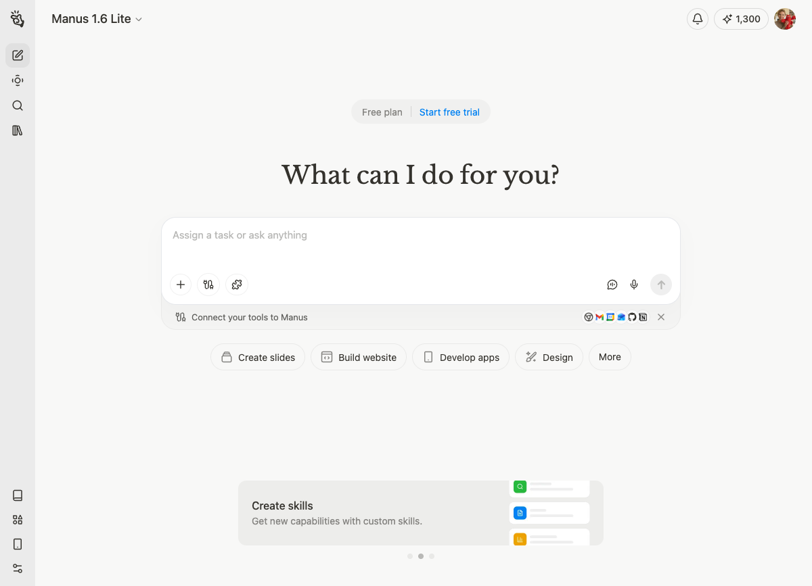

BUSINESS CYBORGS
Seminario de Complejidad · Multiagentes
Camilo Serna Zamora · Febrero 2026
¿Cuántos sienten que solo
rascan la superficie?
El 70% de los usuarios usan IA solo para preguntas simples.
Hoy vamos a pasar de preguntar a dirigir.
🚀
Autos voladores. Robots mayordomos. Jetsons.
💀
Skynet. Terminators. El fin del trabajo.
29 de agosto de 2025 — "Día del Juicio" según la película
💬
Un chat.
La pregunta no es SI van a usar IA.
Es si van a ser relevantes sin ella.
Humanos potenciados con tecnología
Harvard/BCG 2023: consultores con IA fueron 40% más productivos y 25% más rápidos.
Herramientas: ChatGPT · Gemini · Claude · Copilot
Humanos dirigiendo legiones de agentes
Ya no usas una herramienta.
Diriges un equipo de agentes — cada uno en su escritorio.
🔍
Workspace 1
Investigador
📊
Workspace 2
Analista
📋
Workspace 3
Diseñador
Corren en paralelo. Tú revisas en el Inbox.
Eres el director de orquesta.
Múltiples agentes trabajando en paralelo, cada uno en su workspace
— Andrej Karpathy, co-fundador OpenAI
C++, Python, Java — tú escribes cada línea
Tú entrenas, la red ejecuta — Tesla Autopilot
Tú describes, el LLM ejecuta — inglés es el nuevo código
No necesitan saber programar.
Necesitan saber pensar y comunicar.
Como ingenieros industriales,
su ventaja es entender procesos.
Eso es exactamente lo que los agentes necesitan.
¿Dónde estás hoy?
La mayoría de sus compañeros están en Capa 1.
Hoy saltan a Capa 2-3.
Δ ≤ 1
La IA no te necesita.
Prompt genérico → resultado genérico.
⚠️ Danger zone
Δ > 1
Tú eres irremplazable.
Tu contexto multiplica el resultado.
✦ Donde quieres estar
La diferencia no es la IA. Es cómo la diriges.
Agentes autónomos en acción
El agente que trabaja solo
manus.im — Ahora parte de Meta
"Investiga el mercado laboral para ingenieros industriales en Colombia en 2026..."
88% empleabilidad · $3M salario inicial · 7+ sectores · Documento + web interactiva
Pero necesita un buen jefe.
Ahí entran ustedes.
El agente que nunca se apaga
📱
Vive en Telegram
24/7
🧠
Memoria
persistente
📧
Email, calendario,
archivos
⏰
Tareas
programadas
💬 Le pido algo por Telegram...
y responde en tiempo real.
Manus ejecuta tareas.
Scarlett vive contigo. Contexto acumulado.
Open source · Tu máquina · Tus datos
Tu propio agente personal. En tu propia máquina.
No le estás prestando tu vida a OpenAI.
Esto es Capa 4 de la Escalera. A donde van eventualmente.
1. Descargar antigravity.google
2. Login con cuenta Google
3. Abrir Agent Manager
4. Formar equipos de 3-4 personas
Gratis · Mac / Windows / Linux · Gemini 3 Pro incluido
Crear un plan de estudio personalizado usando 3 agentes
trabajando en paralelo, cada uno en su propio workspace.
investigacion.md
analisis-gaps.md
plan-estudio.md
3 agentes en paralelo → revisar en Inbox → iterar → combinar resultados
github.com/scarlettdetekelala/
seminario-multi-agentes
📁 mi-contexto.md — Editar con TU info
📁 prompts/ — Los 3 prompts listos para copiar
📁 ejemplo/ — Resultado completo de ejemplo
📁 resultados/ — Aquí se guardan tus resultados
1. Abrir Antigravity → Agent Manager (no Editor)
2. Agregar 3 workspaces (uno por agente)
3. Copiar mi-contexto.md a cada workspace
4. Lanzar los 3 agentes al mismo tiempo — cada uno con su prompt
5. Monitorear en Inbox → aprobar acciones, dar feedback
6. Cuando los 3 terminen: abrir un 4° agente que combine los 3 resultados
7. Iterar: ¿falta algo? Mandar un agente de vuelta a investigar más
💡 La clave es el paso 5: ustedes son el orquestador. Revisan, redirigen, combinan.
→ Mínimo 3 agentes corriendo en paralelo (no en secuencia)
→ Cada agente en su propio workspace
→ Documentar: qué le pidieron a cada uno y cómo combinaron los resultados
→ Entregable: plan de estudio integrado (no 3 archivos sueltos)
→ Bonus: Medir su Δ — ¿cuánto mejor fue el resultado orquestado vs. un solo prompt?
⏱ 60 minutos
3-4 minutos por equipo
Muestren:
→ Qué le pidieron a cada agente
→ Cómo orquestaron el flujo
→ El resultado
Los demás evalúan:
→ ¿Fue mejor que hacerlo solo con un chat?
01
Augmentation
Potenciaron su trabajo
02
Orchestration
Dirigieron agentes
03
English as Code
Programaron con palabras
Los que aprenden a orquestar
van para arriba.
Los que esperan...
Siempre y cuando estén listos para
experimentar con nuevas formas de hacer las cosas.
businesscyborgs.substack.com
Camilo Serna Zamora · @tekelala